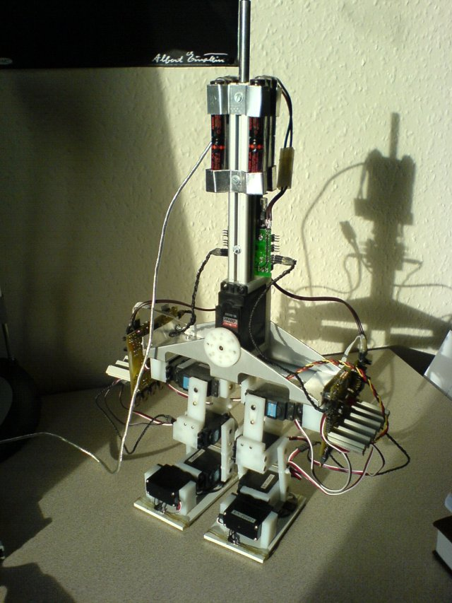
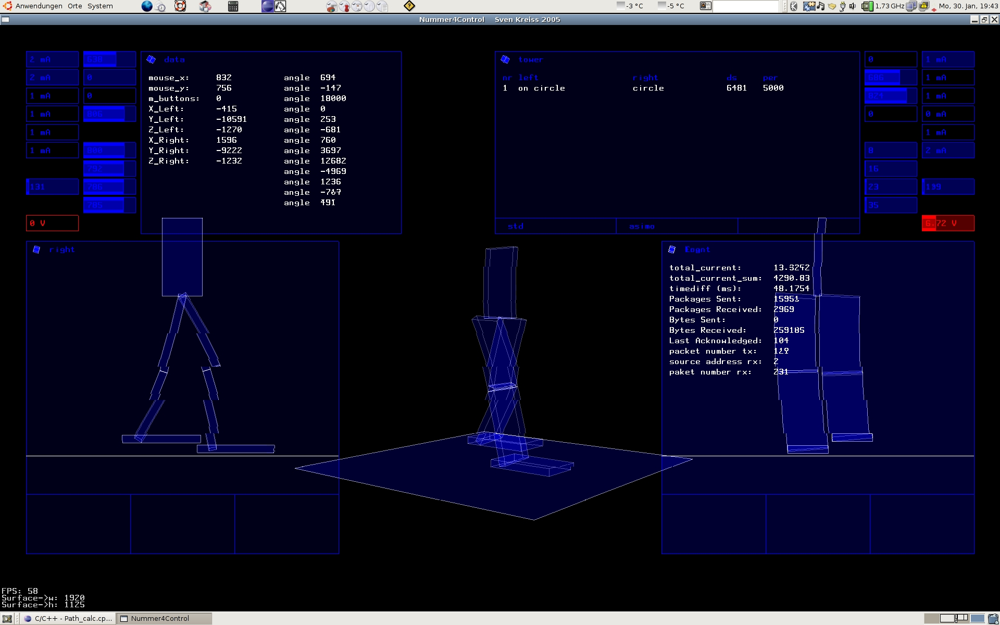
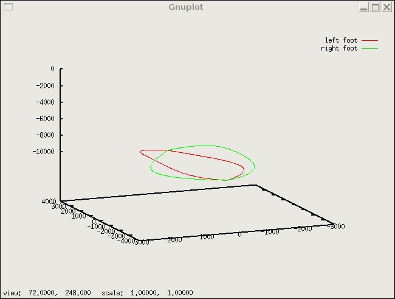
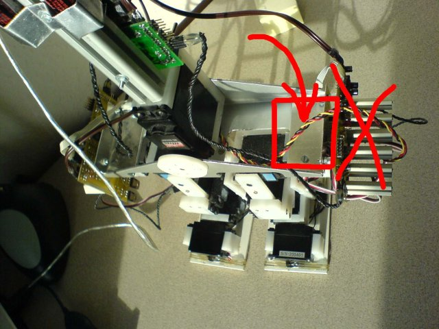
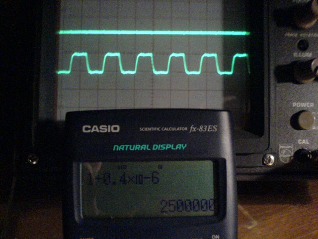

number4 - January 2006 Review
 
The new electronic is being manufactured at the moment and I realised that I do not have a single foto from the current configuration. The new Fotos show the current setting. As you can see in some pictures the analog big servo which controls the body is connected to the left board. I am currently working on it. When I get this fixed I hope to get my walking algorithm working in real. But until I can not solve this problem you can not see anything.
In the past months, I put a lot effort into C++ programming. The PC program is completely rewritten. I am still learning, so I wrote some components three or four times because I found a better way to do this and that and therefore the program developed very slow over time. The graphics part is still a bit messy but - as you can see in the new screenshot - working properly. The screenshot is a bit distorted because the animation was moving when the picture was taken. But trust me, the real animation is without weird lines and distortions.
 What is also nice is the new connection to GnuPlot. I like this program more and more. At the moment it displays the total current consumption from the right and left leg as two graphs in one plot. I also like that it is possible to refresh the graph so that one can see the power consumption with only a small delay (as you would see it on an oscilloscope). Now, I added a three dimensional graph of the space coordinates of the left and right foot over a certain time intervall. I could have plotted it into my OpenGL-animation but it would be hard to export this to LaTeX, soo GnuPlot seems to be the perfect alternative.
 At the moment, the electronic on both sides looks a bit huge and is not very well crafted. This is what I am working on at the moment. The picture shows the new place for the electronic. Technically this version of the electronic was a huge step from the one before. The one which is processed now has some bugfixes and will be manufactured better. But the principle will remain the same. The processes are in another order: the big ATMega128 will measure the sensors himself and the smaller ATMega16 will measure the current consumption on each servo seperatly. The big 9W power resistors are replaced by smaller 2W power resistors.
 What I am very excited about (and hope that it will work) is the new communication. I implemented line drivers for the RS485 bus in full duplex. Additionally I added a driver which makes from the clock signal a twisted pair signal. The specification for the drivers and the USART of the ATMega will allow a maximum transmission speeds of up to 2.5MBit. I had such a fast connection set up before but never tested it extensively. My guess is that a speed of 1.5 to 2.0 MBit is more realistic and sufficient for this purpose.